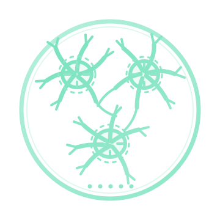

Documentation

Soma Quantification
idle
Add
Remove
Lasso
Undo
−
Fit
+
Side by side
View
▾
Show
Markers
Regions
Ring size
100%
Display
25%
33%
50%
75%
Full
Hide UI
H
Show UI
No section loaded
Drop your channel images on the left.
Ready
detected
added by hand
Drop images to load
Remove this image?
Don't show this again
Cancel
Remove
Settings
Shortcut keys
Reset keys
Images
Ask before removing an image
Side-by-side crosshair
Under the pointer
Copies in the other panels
Size
Thickness
Show copies in the other panels
Reset crosshair
Panning
Edge pan
Edge pan speed
Reset panning
Done
Points in
Select all
Select none
Mirror ↔
Flip ↕
Line up doubled z-planes when opened
Click a point to see it large. Shift-click or drag around points to select them. Each picture is the point's middle z-plane.
← Map
‹
›
Selected
Groups
+ Group from selected
One group per brain: its ID and genotype go into the names of the images opened, and so into exports. Groups are shared with Image Prep for this file.
Close
Open selected in Soma